When The Flower Stops Breathing
Sixteen servo-driven flowers bloom calmly at a respectful distance, and start to stutter when people crowd in.
WhyThe questions behind my senior thesis.
How can humans recognize their presence within nature as an active force rather than a distant observer?
How do humans coexist with the living environment in a way that creates balance rather than destruction?
We damage habitats and prioritize growth at the expense of long-term stability. Yet, our survival is tied directly to a healthy environment: when the ecosystem suffers, human life suffers with it.
Modern life often creates the illusion that environmental destruction exists somewhere distant and disconnected from our daily actions. Through kinetic movement and responsive interaction, this project reveals how human presence can alter surrounding systems, emphasizing the delicate balance between coexistence and disruption.
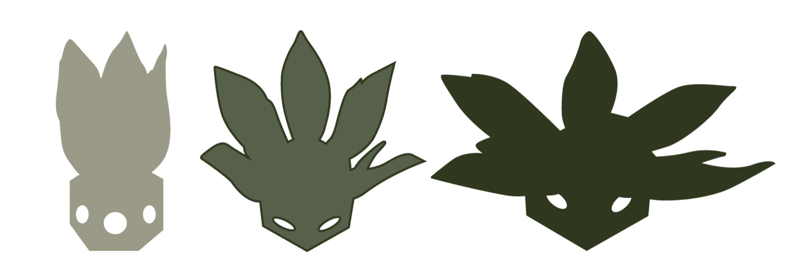
What happens to a system when it is constantly observed, approached, and disturbed?
When The Flower Stops Breathing is an interactive kinetic sculpture composed of a cluster of mechanical flowers that continuously bloom and close, echoing the subtle rhythms of living ecosystems.
The sculpture responds to human presence: when viewers observe from a respectful distance, the flowers move harmoniously, but prolonged or overwhelming interaction begins to disrupt their motion and behavior. As viewers attempt to understand what affects the sculpture’s behavior, they are invited into conversation and collective observation. The goal is not to prevent interaction, but to encourage a balance where people can engage closely with the work without disrupting the ecosystem it represents.
How it worksA webcam feeds a Raspberry Pi running OpenCV, which tracks how many people are near and how long they stay. It sends that to an Arduino that drives sixteen servos through a servo driver, while addressable LEDs light each flower as it blooms.


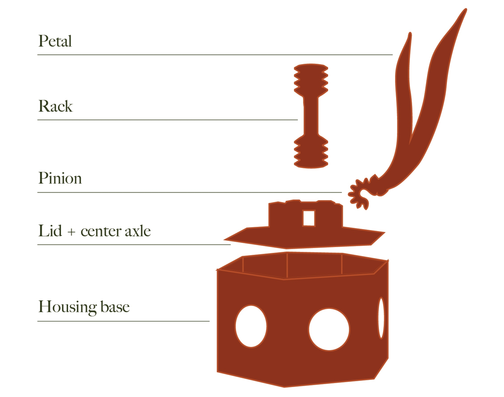
Each flower: a rack and pinion inside the housing turns the servo’s rotation into the petals opening and closing.
MakingTen prototypes, a new mechanism, and sixteen flowers moving as one.
Prototype 13D model, petals moved by tension 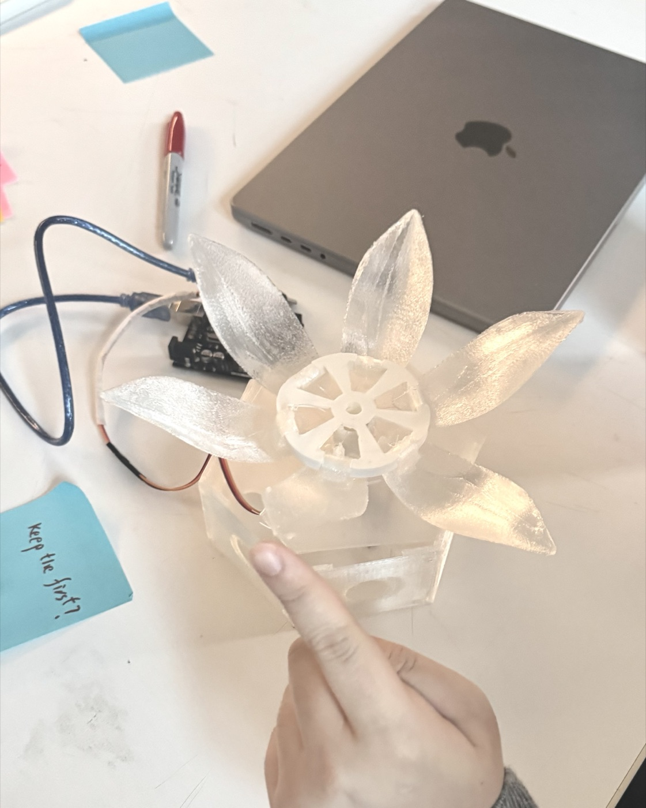
Prototype 1First user testing 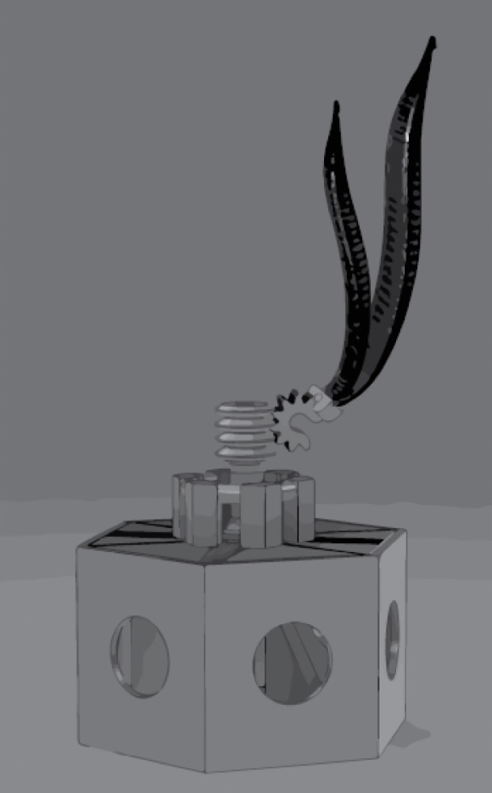
Prototype 103D model (full breakdown in the zine) 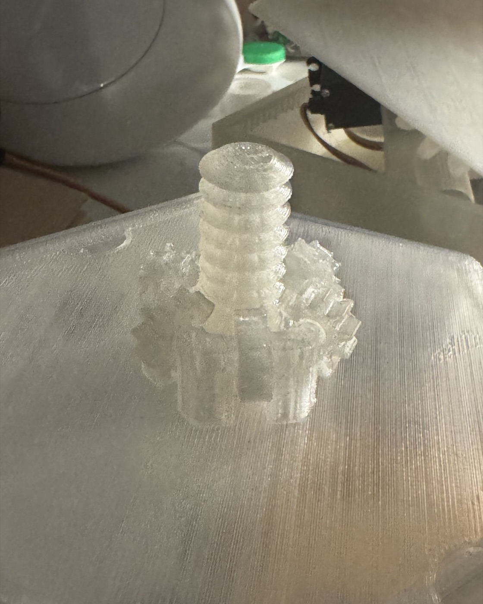
MechanismEarly rack + pinion for petal movement Prototype 10Cardboard reinforcements after troubleshooting MilestoneFirst working automated prototype, with a glimpse of the mechanism 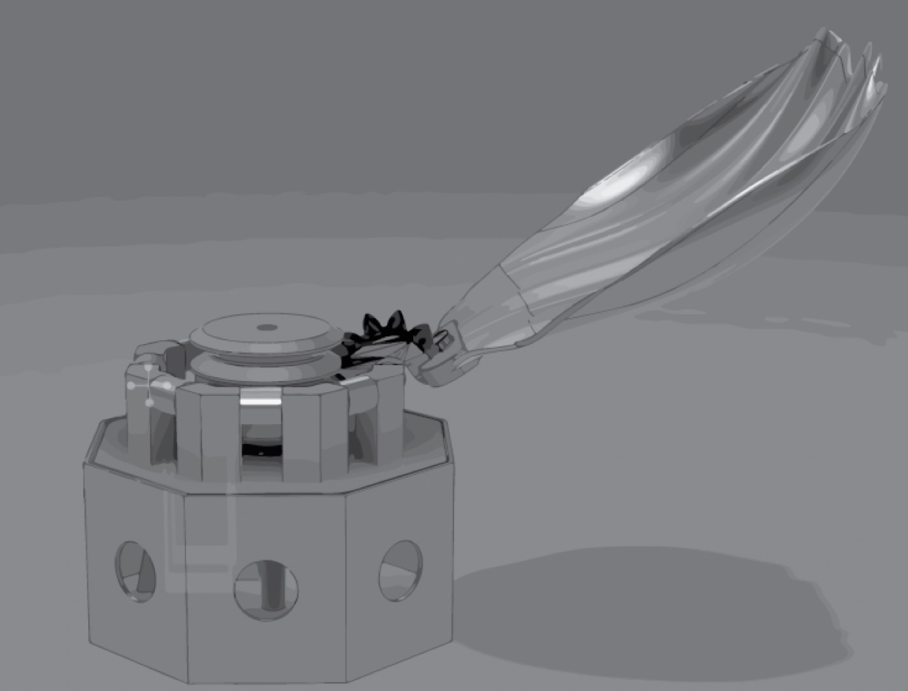
Big flower3D model inspired by the endangered Rafflesia arnoldii Big flowerPrinted and moving 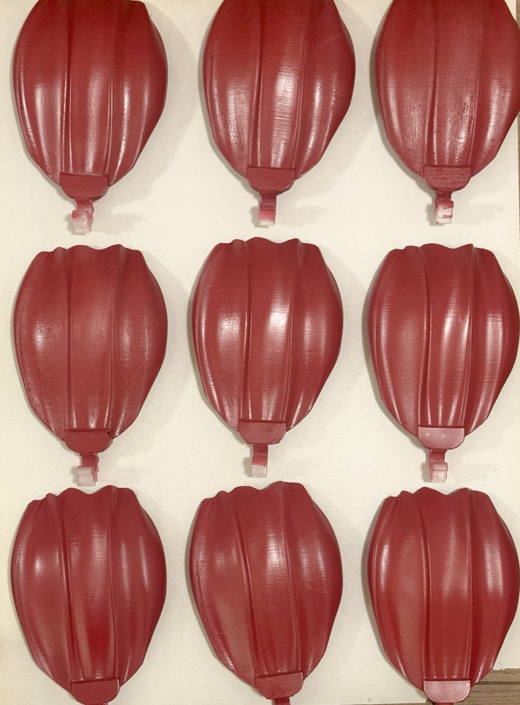
FinishingPainted flower petals 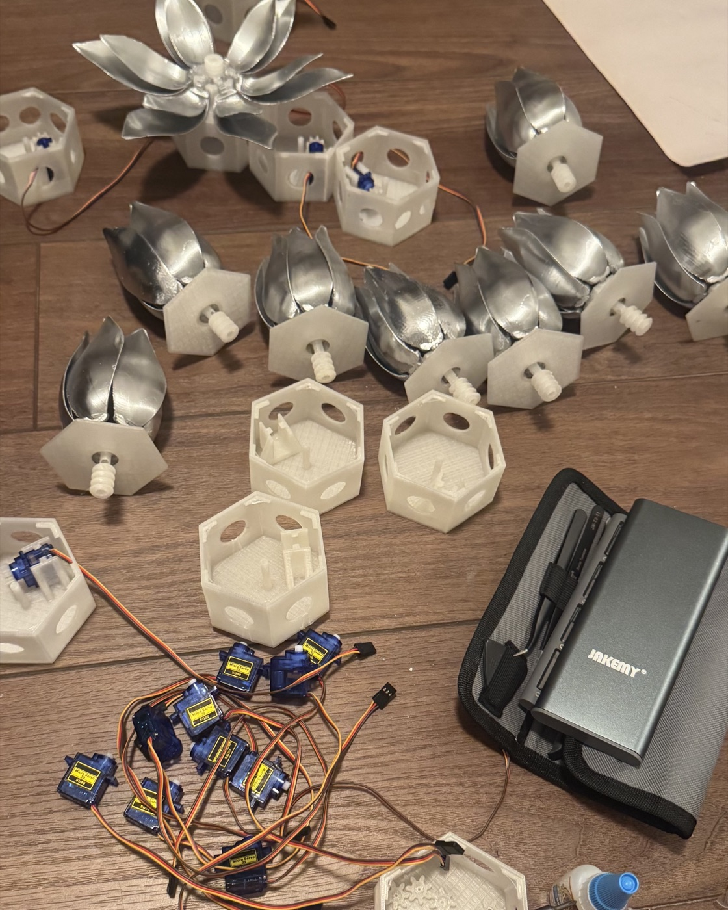
AssemblySetting up, wiring and coding the flowers as a group 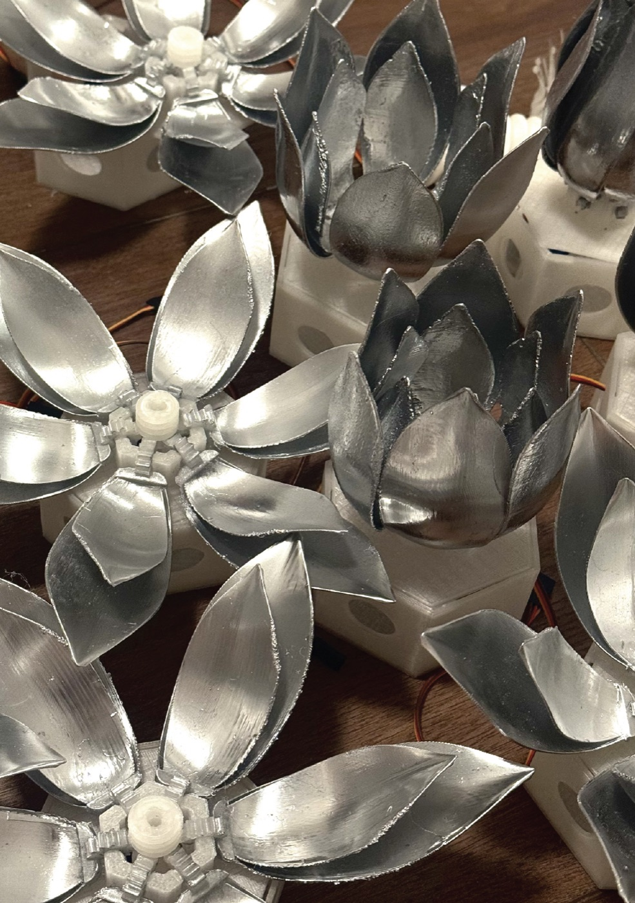
AssemblyThe flower cluster in progress TestingFirst look at the cohesive movement and interaction
ResultThe finished installation.
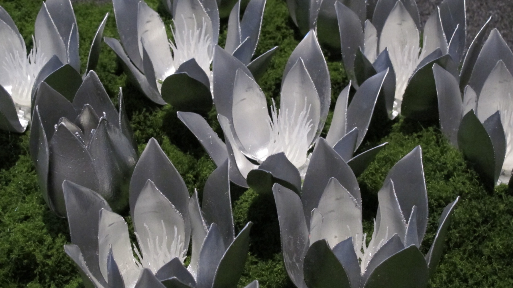
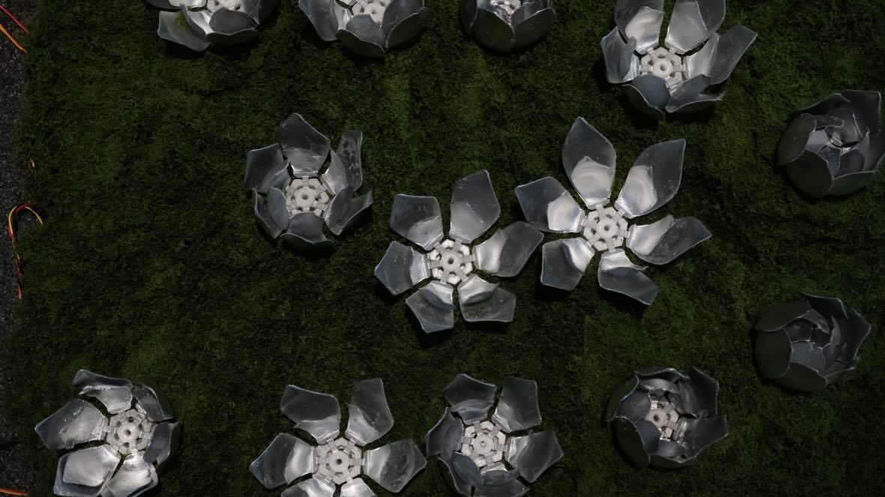
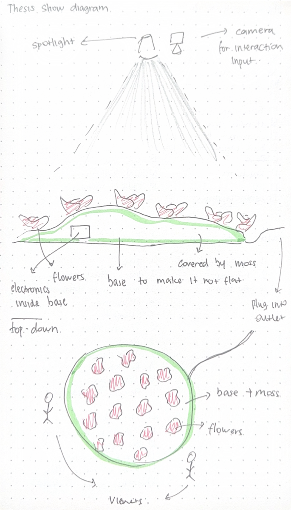
Read more in the zines
The inspiration, goals, artist statement and sketches, in two booklets.
FutureImagining the flowers as a permanent wall installation, at home in a living space.
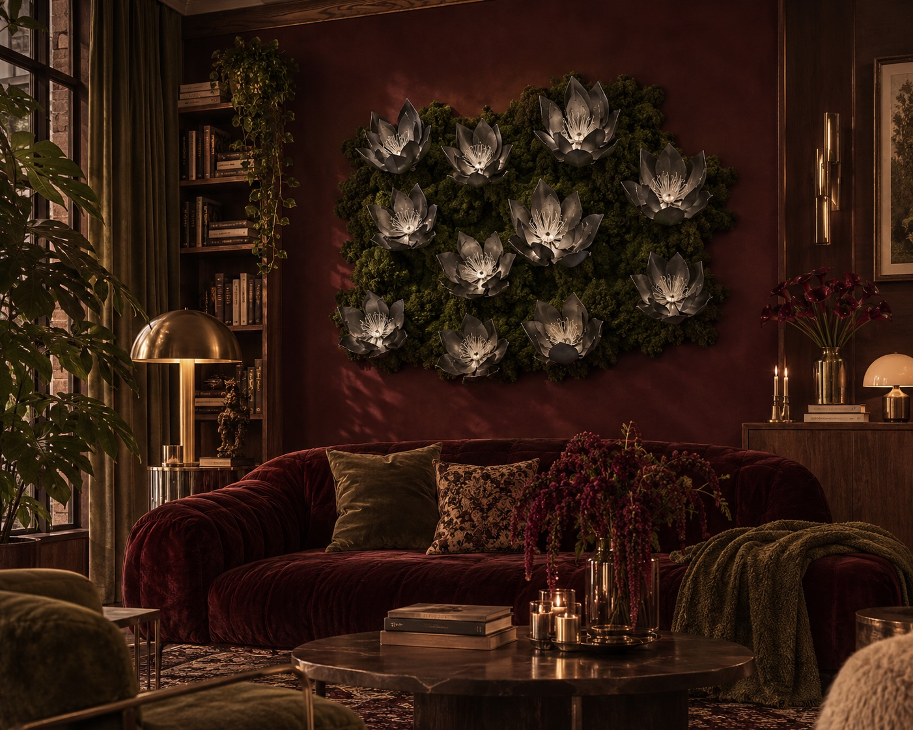
Render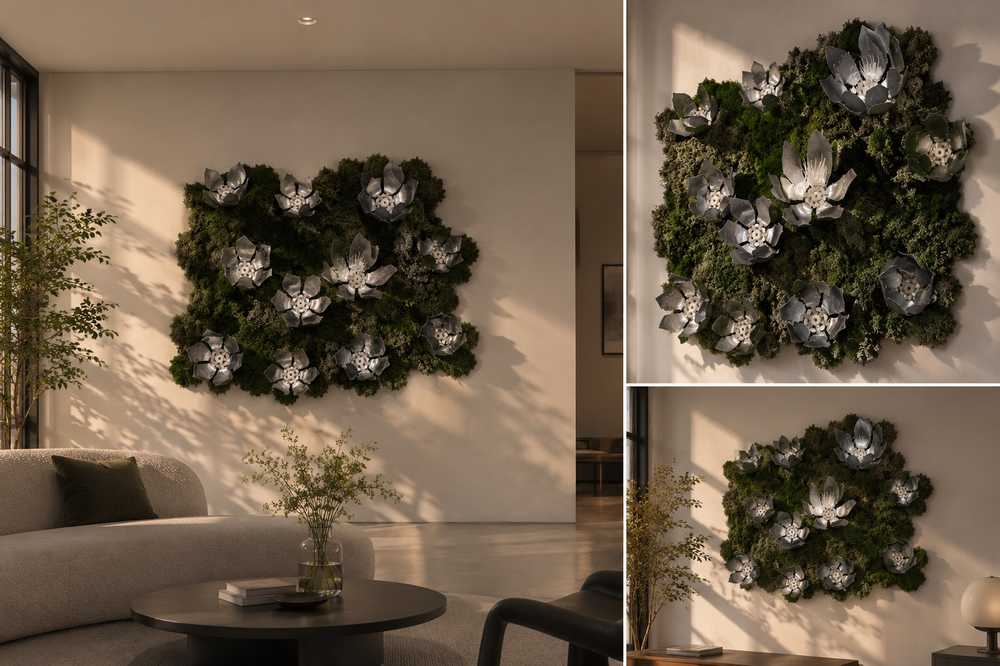
RenderReflectionWhat building it taught me.
The most challenging part was not the construction of motion, but the calibration of response: finding the point where interaction becomes disruption.
Through building this project, I became more aware of how easily systems lose stability when scaled into interaction. What began as a simple mechanical flower quickly turned into a study of sensitivity, how small inputs accumulate into larger behavioral shifts.
It was also challenging to communicate the project’s intention clearly. A recurring point of feedback centered around the use of manmade materials while discussing themes of environmental fragility and human impact on nature. However, that contrast became an important part of the work itself. The combination of organic floral forms with mechanical movement and plastic materials acts as commentary on the irony of the topic, how something visually delicate and beautiful can still be constructed from artificial materials tied to human advancement and consumption. I wanted the piece to create a sense of discomfort and reflection around that contradiction, while also being mindful that the work itself is preserved rather than treated as something disposable.
This project sits between observation and participation. It made me rethink what it means for something to feel “alive,” and how perception changes when behavior is no longer fixed.
Key learnings
Interaction requires careful balance
Designing responsive systems taught me that even small user inputs can significantly affect behavior, making calibration as important as the physical construction itself.
Motion can drive the user experience
Through programming rhythmic “breathing,” I explored how subtle movement can make an artificial object feel emotionally and biologically alive, which is relevant in this project to communicate an emotional effect through mechanical forms.
Participation creates responsibility
Allowing viewers to influence the flower’s behavior transformed them from passive observers into active participants, encouraging reflection on how human actions impact fragile ecosystems.
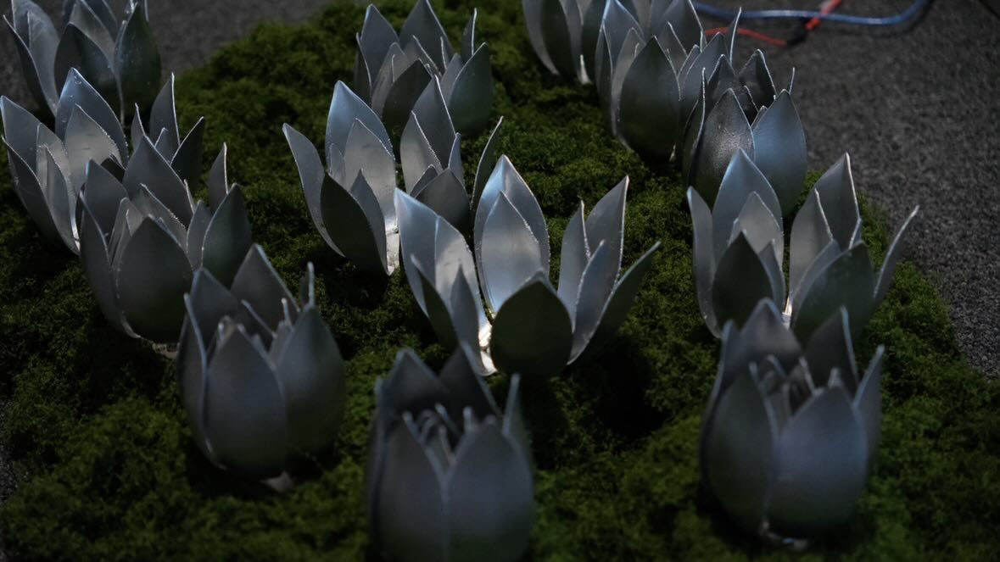